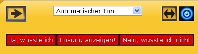
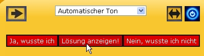
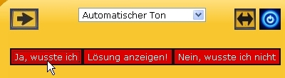

|
| Übersicht |
Die Blitzwiederholung
Die Blitzwiederholung
Die Blitzwiederholung – Auf die Schnelle noch einmal alle Inhalte einer Lektion durchgehen!
Mit dieser Übung haben Sie die Möglichkeit, schnell und effektiv zu testen, ob Sie den Inhalt der Lektion wirklich schon beherrschen.
Und so funktioniert´s:
1. Sie lesen jetzt ein Wort auf Deutsch. Bitte überlegen Sie sich, welche Übersetzung für dieses
Wort richtig sein müsste. |
|  |
2. Klicken Sie jetzt auf Lösung anzeigen. |
|  |
3. Sie sehen jetzt die richtige Übersetzung für dieses Wort. Jetzt müssen Sie ehrlich mit sich selbst
sein: War Ihre Übersetzung richtig? – Dann klicken Sie bitte auf Ja, wusste ich. Wenn Sie mit
Ihrer Übersetzung daneben gelegen haben, drücken Sie bitte auf den Knopf mit der Aufschrift Nein, wusste
ich nicht.
|
|  |
Wenn Sie den Test lieber über die Tastatur steuern möchten, so können Sie die Tastaturkürzel 'Alt'+1, 'Alt'+2 und 'Alt'+3 benutzen ('Ctrl' statt 'Alt' unter Mac OS X).
Folgende Symbole finden Sie in dieser Übung:
Ein Schritt nach vorne! Wenn Sie auf dieses Symbol klicken, wird Ihnen die nächste Aufgabe gestellt. Sie werden das nächste Wort lesen, dessen Übersetzung Sie wissen müssen. |
|
Ein Schritt nach hinten! Mit einem Druck auf dieses Symbol, kommen Sie zur vorhergegangenen Aufgabe zurück. |
|
Sprache wechseln, bitte! Mit diesem Symbol können Sie die Ausgangs- und Zielsprache Ihrer Abfragen festlegen bzw. vertauschen. Mit einem Klick wechseln Sie zum Beispiel von der Abfrage der Fremdsprache zur Abfrage der deutschen Übersetzung. |
|
Anhören, bitte! Wenn Sie auf das Lautsprechersymbol klicken, öffnet sich ein Audio-Programm auf Ihrem Rechner und Sie werden hören, was Sie gerade lesen. |